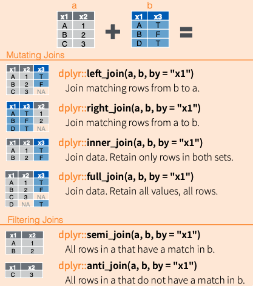

library(tidyverse)
imdb_raw <- read_csv("https://www.dropbox.com/s/wfwyxjkpo24e3yq/imdb2006-2016.csv?dl=1")4 Manipulation with dplyr
The last chapter showed you four things: how you get data sets into R, a couple of ways to create tibbles, how to pass data to functions using the pipe (|>), and an introduction to tidy data and how to make data sets tidy using the tidyr package (Wickham 2020b). What you haven’t learned was how you can actually manipulate the data itself. In the tidyverse framework (Wickham et al. 2019), the package which enables you to accomplish those tasks is dplyr (Wickham 2020a).
dplyr joined the party in 2014, building upon the plyr package. The d in dplyr stands for data set and dplyr works with tibbles (or data frames) only.
It consists of five main functions, the “verbs”:
arrange()– sort valuesfilter()– pick observationsmutate()– create new variables (columns)select()– select variablessummarize()– create summaries from multiple values
They are joined by group_by(), a function that changes the scope on which entities the functions are applied to.
Furthermore, diverse bind_ functions and _joins enable you to combine multiple tibbles into one. They will be introduced later.
4.1 Working with the main “verbs”
In the following, I will guide you through how you can use the verbs to accomplish whatever goals which require data wrangling you might have.
The data set I will use here consists of the 1,000 most popular movies on IMDb which were published between 2006 and 2016 and some data on them. It was created by PromptCloud and DataStock and published on Kaggle, more information can be found here.
The data set hasn’t been modified by me before. I will show you how I would go across it using a couple of dplyr functions.
4.1.1 select()
select enables you to select columns. Since we are dealing with tidy data, every variable has its own column.
glimpse() provides you with an overview of the data set and its columns.
glimpse(imdb_raw)Rows: 1,000
Columns: 12
$ Rank <dbl> 1, 2, 3, 4, 5, 6, 7, 8, 9, 10, 11, 12, 13, 14, 15…
$ Title <chr> "Guardians of the Galaxy", "Prometheus", "Split",…
$ Genre <chr> "Action,Adventure,Sci-Fi", "Adventure,Mystery,Sci…
$ Description <chr> "A group of intergalactic criminals are forced to…
$ Director <chr> "James Gunn", "Ridley Scott", "M. Night Shyamalan…
$ Actors <chr> "Chris Pratt, Vin Diesel, Bradley Cooper, Zoe Sal…
$ Year <dbl> 2014, 2012, 2016, 2016, 2016, 2016, 2016, 2016, 2…
$ `Runtime (Minutes)` <dbl> 121, 124, 117, 108, 123, 103, 128, 89, 141, 116, …
$ Rating <dbl> 8.1, 7.0, 7.3, 7.2, 6.2, 6.1, 8.3, 6.4, 7.1, 7.0,…
$ Votes <dbl> 757074, 485820, 157606, 60545, 393727, 56036, 258…
$ `Revenue (Millions)` <dbl> 333.13, 126.46, 138.12, 270.32, 325.02, 45.13, 15…
$ Metascore <dbl> 76, 65, 62, 59, 40, 42, 93, 71, 78, 41, 66, 74, 6…The columns I want to keep are: Title, Director, Year, Runtime (Minutes), Rating, Votes, and Revenue (Millions). Furthermore, I want to rename the columns: every column’s name should be in lowercase and a regular name that does not need to be surrounded by back ticks – i.e., a name that only consists of characters, numbers, underscores, or dots.
This can be achieved in a couple of ways:
First, by choosing the columns column by column and subsequently renaming them:
imdb_raw |>
select(Title, Director, Year, `Runtime (Minutes)`, Rating, Votes, `Revenue (Millions)`) |>
rename(title = Title, director = Director, year = Year, runtime = `Runtime (Minutes)`, rating = Rating, votes = Votes, revenue_million = `Revenue (Millions)`) |>
glimpse()Rows: 1,000
Columns: 7
$ title <chr> "Guardians of the Galaxy", "Prometheus", "Split", "Sin…
$ director <chr> "James Gunn", "Ridley Scott", "M. Night Shyamalan", "C…
$ year <dbl> 2014, 2012, 2016, 2016, 2016, 2016, 2016, 2016, 2016, …
$ runtime <dbl> 121, 124, 117, 108, 123, 103, 128, 89, 141, 116, 133, …
$ rating <dbl> 8.1, 7.0, 7.3, 7.2, 6.2, 6.1, 8.3, 6.4, 7.1, 7.0, 7.5,…
$ votes <dbl> 757074, 485820, 157606, 60545, 393727, 56036, 258682, …
$ revenue_million <dbl> 333.13, 126.46, 138.12, 270.32, 325.02, 45.13, 151.06,…Second, the columns can also be chosen vice versa: unnecessary columns can be dropped using a minus:
imdb_raw |>
select(-Rank, -Genre, -Description, -Actors, -Metascore) |>
rename(title = Title, director = Director, year = Year, runtime = `Runtime (Minutes)`, rating = Rating, votes = Votes, revenue_million = `Revenue (Millions)`) |>
glimpse()Rows: 1,000
Columns: 7
$ title <chr> "Guardians of the Galaxy", "Prometheus", "Split", "Sin…
$ director <chr> "James Gunn", "Ridley Scott", "M. Night Shyamalan", "C…
$ year <dbl> 2014, 2012, 2016, 2016, 2016, 2016, 2016, 2016, 2016, …
$ runtime <dbl> 121, 124, 117, 108, 123, 103, 128, 89, 141, 116, 133, …
$ rating <dbl> 8.1, 7.0, 7.3, 7.2, 6.2, 6.1, 8.3, 6.4, 7.1, 7.0, 7.5,…
$ votes <dbl> 757074, 485820, 157606, 60545, 393727, 56036, 258682, …
$ revenue_million <dbl> 333.13, 126.46, 138.12, 270.32, 325.02, 45.13, 151.06,…Columns can also be renamed in the selecting process:
imdb_raw |>
select(title = Title, director = Director, year = Year, runtime = `Runtime (Minutes)`, rating = Rating, votes = Votes, revenue_million = `Revenue (Millions)`) |>
glimpse()Rows: 1,000
Columns: 7
$ title <chr> "Guardians of the Galaxy", "Prometheus", "Split", "Sin…
$ director <chr> "James Gunn", "Ridley Scott", "M. Night Shyamalan", "C…
$ year <dbl> 2014, 2012, 2016, 2016, 2016, 2016, 2016, 2016, 2016, …
$ runtime <dbl> 121, 124, 117, 108, 123, 103, 128, 89, 141, 116, 133, …
$ rating <dbl> 8.1, 7.0, 7.3, 7.2, 6.2, 6.1, 8.3, 6.4, 7.1, 7.0, 7.5,…
$ votes <dbl> 757074, 485820, 157606, 60545, 393727, 56036, 258682, …
$ revenue_million <dbl> 333.13, 126.46, 138.12, 270.32, 325.02, 45.13, 151.06,…You can also make your expressions shorter by using a couple of hacks:
: can be used to select all columns between two:
imdb_raw |>
select(Title, Director, Year:`Revenue (Millions)`) |>
rename(title = Title, director = Director, year = Year, runtime = `Runtime (Minutes)`, rating = Rating, votes = Votes, revenue_million = `Revenue (Millions)`) |>
glimpse()Rows: 1,000
Columns: 7
$ title <chr> "Guardians of the Galaxy", "Prometheus", "Split", "Sin…
$ director <chr> "James Gunn", "Ridley Scott", "M. Night Shyamalan", "C…
$ year <dbl> 2014, 2012, 2016, 2016, 2016, 2016, 2016, 2016, 2016, …
$ runtime <dbl> 121, 124, 117, 108, 123, 103, 128, 89, 141, 116, 133, …
$ rating <dbl> 8.1, 7.0, 7.3, 7.2, 6.2, 6.1, 8.3, 6.4, 7.1, 7.0, 7.5,…
$ votes <dbl> 757074, 485820, 157606, 60545, 393727, 56036, 258682, …
$ revenue_million <dbl> 333.13, 126.46, 138.12, 270.32, 325.02, 45.13, 151.06,…starts_with() select columns whose names start with the same character string:
imdb_selected <- imdb_raw |>
select(Title, Director, Votes, Year, starts_with("R")) |>
select(-Rank) |>
rename(title = Title, director = Director, year = Year, runtime = `Runtime (Minutes)`, rating = Rating, votes = Votes, revenue_million = `Revenue (Millions)`) |>
glimpse()Rows: 1,000
Columns: 7
$ title <chr> "Guardians of the Galaxy", "Prometheus", "Split", "Sin…
$ director <chr> "James Gunn", "Ridley Scott", "M. Night Shyamalan", "C…
$ votes <dbl> 757074, 485820, 157606, 60545, 393727, 56036, 258682, …
$ year <dbl> 2014, 2012, 2016, 2016, 2016, 2016, 2016, 2016, 2016, …
$ runtime <dbl> 121, 124, 117, 108, 123, 103, 128, 89, 141, 116, 133, …
$ rating <dbl> 8.1, 7.0, 7.3, 7.2, 6.2, 6.1, 8.3, 6.4, 7.1, 7.0, 7.5,…
$ revenue_million <dbl> 333.13, 126.46, 138.12, 270.32, 325.02, 45.13, 151.06,…As you may have noticed, the order in the select() matters: columns will be ordered in the same order as they are chosen.
A couple of further shortcuts for select() do exist. An overview can be found in the dplyr cheatsheet.
4.1.2 filter()
Whereas select() enables you to choose variables (i.e., columns), filter() lets you choose observations (i.e., rows).
In this case, I only want movies with a revenue above $100,000,000:
imdb_selected |>
filter(revenue_million > 100) |>
glimpse()Rows: 250
Columns: 7
$ title <chr> "Guardians of the Galaxy", "Prometheus", "Split", "Sin…
$ director <chr> "James Gunn", "Ridley Scott", "M. Night Shyamalan", "C…
$ votes <dbl> 757074, 485820, 157606, 60545, 393727, 258682, 192177,…
$ year <dbl> 2014, 2012, 2016, 2016, 2016, 2016, 2016, 2016, 2016, …
$ runtime <dbl> 121, 124, 117, 108, 123, 128, 116, 133, 127, 133, 107,…
$ rating <dbl> 8.1, 7.0, 7.3, 7.2, 6.2, 8.3, 7.0, 7.5, 7.8, 7.9, 7.7,…
$ revenue_million <dbl> 333.13, 126.46, 138.12, 270.32, 325.02, 151.06, 100.01…Besides, I am especially interested in the director Christopher Nolan. Therefore, I want to look at movies that were directed by him and made more than $100,000,000:
imdb_selected |>
filter(revenue_million > 100 & director == "Christopher Nolan") |>
glimpse()Rows: 4
Columns: 7
$ title <chr> "Interstellar", "The Dark Knight", "Inception", "The D…
$ director <chr> "Christopher Nolan", "Christopher Nolan", "Christopher…
$ votes <dbl> 1047747, 1791916, 1583625, 1222645
$ year <dbl> 2014, 2008, 2010, 2012
$ runtime <dbl> 169, 152, 148, 164
$ rating <dbl> 8.6, 9.0, 8.8, 8.5
$ revenue_million <dbl> 187.99, 533.32, 292.57, 448.13The following overview is taken from the dplyr cheatsheet and shows the operators you can use in filter():
4.1.2.1 Exemplary application
To demonstrate how a real-world application of this stuff could look like, I will now provide you a brief insight into my private life and how I organize movie nights. JK. You could definitely try this at home and surprise your loved ones with such hot applications. If you are brave and surprise your latest Tinder match with an .RDS file containing suggestions for Netflix&Chill, please let me know what their response looked like.
Tonight, I will hang out with a real nerd. Probably because they (nerds have all kinds of genders) know about my faible for R, they have sent me a vector containing a couple of movies we could watch tonight:
set.seed(123) # guarantees that movie_vec will always be the same thing
movie_vec <- imdb_raw$Title[sample(1000, 10, replace = FALSE)]
movie_vec [1] "Mechanic: Resurrection" "Denial" "The Conjuring 2"
[4] "Birth of the Dragon" "Warrior" "Super"
[7] "127 Hours" "Dangal" "The Infiltrator"
[10] "Maleficent" However, I want to make a more informed decision and decide to obtain some more information on the movies from my IMDb data set:
imdb_selected |>
filter(title %in% movie_vec) |>
glimpse()Rows: 10
Columns: 7
$ title <chr> "Dangal", "The Conjuring 2", "Warrior", "Maleficent", …
$ director <chr> "Nitesh Tiwari", "James Wan", "Gavin O'Connor", "Rober…
$ votes <dbl> 48969, 137203, 355722, 268877, 43929, 48161, 8229, 552…
$ year <dbl> 2016, 2016, 2011, 2014, 2016, 2016, 2016, 2016, 2010, …
$ runtime <dbl> 161, 134, 140, 97, 127, 98, 109, 103, 94, 96
$ rating <dbl> 8.8, 7.4, 8.2, 7.0, 7.1, 5.6, 6.6, 3.9, 7.6, 6.8
$ revenue_million <dbl> 11.15, 102.46, 13.65, 241.41, 15.43, 21.20, 4.07, 93.0…I have convinced them to watch either one of the movies they have suggested or one directed by Christopher Nolan or one with a rating greater or equal to 8.5 and send them back this data set:
imdb_selected |>
filter(title %in% movie_vec | director == "Christopher Nolan" | rating >= 8.5) |>
glimpse()Rows: 21
Columns: 7
$ title <chr> "Interstellar", "The Dark Knight", "The Prestige", "In…
$ director <chr> "Christopher Nolan", "Christopher Nolan", "Christopher…
$ votes <dbl> 1047747, 1791916, 913152, 1583625, 34110, 937414, 4896…
$ year <dbl> 2014, 2008, 2006, 2010, 2016, 2006, 2016, 2012, 2014, …
$ runtime <dbl> 169, 152, 130, 148, 106, 151, 161, 164, 107, 134, 140,…
$ rating <dbl> 8.6, 9.0, 8.5, 8.8, 8.6, 8.5, 8.8, 8.5, 8.5, 7.4, 8.2,…
$ revenue_million <dbl> 187.99, 533.32, 53.08, 292.57, 4.68, 132.37, 11.15, 44…“I deteste ‘Interstellar’,” is the response. “All right,” I say to myself, “I can easily exclude it.”
imdb_selected |>
filter(title %in% movie_vec | director == "Christopher Nolan" | rating >= 8.5 & title != "Interstellar") |> # if you want to negate something, put the ! in front of it
glimpse()Rows: 21
Columns: 7
$ title <chr> "Interstellar", "The Dark Knight", "The Prestige", "In…
$ director <chr> "Christopher Nolan", "Christopher Nolan", "Christopher…
$ votes <dbl> 1047747, 1791916, 913152, 1583625, 34110, 937414, 4896…
$ year <dbl> 2014, 2008, 2006, 2010, 2016, 2006, 2016, 2012, 2014, …
$ runtime <dbl> 169, 152, 130, 148, 106, 151, 161, 164, 107, 134, 140,…
$ rating <dbl> 8.6, 9.0, 8.5, 8.8, 8.6, 8.5, 8.8, 8.5, 8.5, 7.4, 8.2,…
$ revenue_million <dbl> 187.99, 533.32, 53.08, 292.57, 4.68, 132.37, 11.15, 44…Oh, that did not work. I should wrap them in columns:
imdb_selected |>
filter((title %in% movie_vec | director == "Christopher Nolan" | rating >= 8.5) & title != "Interstellar") |>
glimpse()Rows: 20
Columns: 7
$ title <chr> "The Dark Knight", "The Prestige", "Inception", "Kimi …
$ director <chr> "Christopher Nolan", "Christopher Nolan", "Christopher…
$ votes <dbl> 1791916, 913152, 1583625, 34110, 937414, 48969, 122264…
$ year <dbl> 2008, 2006, 2010, 2016, 2006, 2016, 2012, 2014, 2016, …
$ runtime <dbl> 152, 130, 148, 106, 151, 161, 164, 107, 134, 140, 97, …
$ rating <dbl> 9.0, 8.5, 8.8, 8.6, 8.5, 8.8, 8.5, 8.5, 7.4, 8.2, 7.0,…
$ revenue_million <dbl> 533.32, 53.08, 292.57, 4.68, 132.37, 11.15, 448.13, 13…They come up with a new idea: we have a Scottish evening with a movie directed by the Scottish director Gillies MacKinnon:
imdb_selected |>
filter(director == "Gillies MacKinnon") |>
glimpse()Rows: 1
Columns: 7
$ title <chr> "Whisky Galore"
$ director <chr> "Gillies MacKinnon"
$ votes <dbl> 102
$ year <dbl> 2016
$ runtime <dbl> 98
$ rating <dbl> 5
$ revenue_million <dbl> NA“Well, apparently there is a problem in the data set,” I notice. “There is an NA in the revenue column. I should probably have a further look at this.”
imdb_selected |>
filter(is.na(revenue_million)) |>
glimpse()Rows: 128
Columns: 7
$ title <chr> "Mindhorn", "Hounds of Love", "Paris pieds nus", "5- 2…
$ director <chr> "Sean Foley", "Ben Young", "Dominique Abel", "Patrick …
$ votes <dbl> 2490, 1115, 222, 241, 496, 5103, 987, 35870, 149791, 7…
$ year <dbl> 2016, 2016, 2016, 2007, 2016, 2016, 2016, 2016, 2016, …
$ runtime <dbl> 89, 108, 83, 113, 73, 91, 130, 86, 133, 106, 105, 118,…
$ rating <dbl> 6.4, 6.7, 6.8, 7.1, 2.7, 5.6, 3.7, 6.8, 5.9, 7.9, 5.8,…
$ revenue_million <dbl> NA, NA, NA, NA, NA, NA, NA, NA, NA, NA, NA, NA, NA, NA…Well, that’s quite a significant number of NAs. I will need to exclude these cases:
imdb_selected |>
filter(!is.na(revenue_million)) |>
glimpse()Rows: 872
Columns: 7
$ title <chr> "Guardians of the Galaxy", "Prometheus", "Split", "Sin…
$ director <chr> "James Gunn", "Ridley Scott", "M. Night Shyamalan", "C…
$ votes <dbl> 757074, 485820, 157606, 60545, 393727, 56036, 258682, …
$ year <dbl> 2014, 2012, 2016, 2016, 2016, 2016, 2016, 2016, 2016, …
$ runtime <dbl> 121, 124, 117, 108, 123, 103, 128, 141, 116, 133, 127,…
$ rating <dbl> 8.1, 7.0, 7.3, 7.2, 6.2, 6.1, 8.3, 7.1, 7.0, 7.5, 7.8,…
$ revenue_million <dbl> 333.13, 126.46, 138.12, 270.32, 325.02, 45.13, 151.06,…4.1.2.2 Other possibilities to subset observations
slice() selects rows by positions:
imdb_selected |>
slice(1:10) |>
glimpse()Rows: 10
Columns: 7
$ title <chr> "Guardians of the Galaxy", "Prometheus", "Split", "Sin…
$ director <chr> "James Gunn", "Ridley Scott", "M. Night Shyamalan", "C…
$ votes <dbl> 757074, 485820, 157606, 60545, 393727, 56036, 258682, …
$ year <dbl> 2014, 2012, 2016, 2016, 2016, 2016, 2016, 2016, 2016, …
$ runtime <dbl> 121, 124, 117, 108, 123, 103, 128, 89, 141, 116
$ rating <dbl> 8.1, 7.0, 7.3, 7.2, 6.2, 6.1, 8.3, 6.4, 7.1, 7.0
$ revenue_million <dbl> 333.13, 126.46, 138.12, 270.32, 325.02, 45.13, 151.06,…distinct removes duplicate rows:
imdb_selected |>
distinct(director) |>
glimpse()Rows: 644
Columns: 1
$ director <chr> "James Gunn", "Ridley Scott", "M. Night Shyamalan", "Christop…By default, it will remove all other columns apart from the one(s) you have specified. You can avoid that by setting .keep_all = TRUE:
imdb_selected |>
distinct(title, .keep_all = TRUE) |>
glimpse()Rows: 999
Columns: 7
$ title <chr> "Guardians of the Galaxy", "Prometheus", "Split", "Sin…
$ director <chr> "James Gunn", "Ridley Scott", "M. Night Shyamalan", "C…
$ votes <dbl> 757074, 485820, 157606, 60545, 393727, 56036, 258682, …
$ year <dbl> 2014, 2012, 2016, 2016, 2016, 2016, 2016, 2016, 2016, …
$ runtime <dbl> 121, 124, 117, 108, 123, 103, 128, 89, 141, 116, 133, …
$ rating <dbl> 8.1, 7.0, 7.3, 7.2, 6.2, 6.1, 8.3, 6.4, 7.1, 7.0, 7.5,…
$ revenue_million <dbl> 333.13, 126.46, 138.12, 270.32, 325.02, 45.13, 151.06,…Oh, interesting, there is apparently one movie which is in there twice. How could we find this movie?
4.1.3 mutate()
My data set looks pretty nice already, but one flaw catches the eye: the column revenue_million should probably be converted to revenue. Hence, I need to create a new variable which contains the values from revenue_million multiplied by 1,000,000 and drop the now obsolete revenue_million.
imdb_selected |>
mutate(revenue = revenue_million * 1000000) |>
select(-revenue_million) |>
glimpse()Rows: 1,000
Columns: 7
$ title <chr> "Guardians of the Galaxy", "Prometheus", "Split", "Sing", "Su…
$ director <chr> "James Gunn", "Ridley Scott", "M. Night Shyamalan", "Christop…
$ votes <dbl> 757074, 485820, 157606, 60545, 393727, 56036, 258682, 2490, 7…
$ year <dbl> 2014, 2012, 2016, 2016, 2016, 2016, 2016, 2016, 2016, 2016, 2…
$ runtime <dbl> 121, 124, 117, 108, 123, 103, 128, 89, 141, 116, 133, 127, 13…
$ rating <dbl> 8.1, 7.0, 7.3, 7.2, 6.2, 6.1, 8.3, 6.4, 7.1, 7.0, 7.5, 7.8, 7…
$ revenue <dbl> 333130000, 126460000, 138120000, 270320000, 325020000, 451300…The structure of the mutate() call looks like this: first, you need to provide the name of the new variable. If the variable exists already, it will be replaced. Second, the equal sign tells R what the new variable should contain. Third, a function that outputs a vector which is as long as the tibble has rows or 1.
If we want to drop all other columns and just keep the new one: transmute() drops all the original columns.
imdb_selected |>
transmute(revenue = revenue_million * 1000000) |>
glimpse()Rows: 1,000
Columns: 1
$ revenue <dbl> 333130000, 126460000, 138120000, 270320000, 325020000, 4513000…mutate() uses so-called window functions. They take one vector of values and return another vector of values. An overview – again, from the cheat sheet:

Another feature of dplyr, which is useful in combination with mutate(), is case_when().
case_when() can for instance be used to create binary indicator variables. In this example I want it to be 0 if the movie was made before 2010 and 1 if not.
imdb_selected |>
mutate(indicator = case_when(year < 2010 ~ 0,
year >= 2010 ~ 1,
TRUE ~ 2)) |>
glimpse()Rows: 1,000
Columns: 8
$ title <chr> "Guardians of the Galaxy", "Prometheus", "Split", "Sin…
$ director <chr> "James Gunn", "Ridley Scott", "M. Night Shyamalan", "C…
$ votes <dbl> 757074, 485820, 157606, 60545, 393727, 56036, 258682, …
$ year <dbl> 2014, 2012, 2016, 2016, 2016, 2016, 2016, 2016, 2016, …
$ runtime <dbl> 121, 124, 117, 108, 123, 103, 128, 89, 141, 116, 133, …
$ rating <dbl> 8.1, 7.0, 7.3, 7.2, 6.2, 6.1, 8.3, 6.4, 7.1, 7.0, 7.5,…
$ revenue_million <dbl> 333.13, 126.46, 138.12, 270.32, 325.02, 45.13, 151.06,…
$ indicator <dbl> 1, 1, 1, 1, 1, 1, 1, 1, 1, 1, 1, 1, 1, 1, 1, 1, 1, 1, …Keep in mind that you can throw any function into mutate() as long as it is vectorized and the output has the same length as the tibble or 1.
4.1.4 summarize() and group_by
When you analyze data, you often want to compare entities according to some sort of summary statistic. This means that you, first, need to split up your data set into certain groups which share one or more characteristics, and, second, collapse the columns together into single-row summaries. The former challenge is accomplished using group_by() whose argument is one or more variables, the latter requires the summarize() function. This function works similar to mutate() but uses summary functions – which take a vector of multiple values and return a single value – instead of window functions – which return a vector of the same length as the input.
Let me provide you an example.
I am interested in the director’s average ratings:
imdb_selected |>
group_by(director) |>
summarize(avg_rating = mean(rating))# A tibble: 644 × 2
director avg_rating
<chr> <dbl>
1 Aamir Khan 8.5
2 Abdellatif Kechiche 7.8
3 Adam Leon 6.5
4 Adam McKay 7
5 Adam Shankman 6.3
6 Adam Wingard 5.9
7 Afonso Poyart 6.4
8 Aisling Walsh 7.8
9 Akan Satayev 6.3
10 Akiva Schaffer 6.7
# … with 634 more rowsIn general, summarize() always works like this: first, you change the scope from the entire tibble to different groups. Then, you calculate your summary. If you then want to further manipulate your date or calculate something else based on the new summary, you need to call ungroup().
You can see the summary functions below:

Another handy function akin to this is count(). It counts all occurrences of a singular value in the tibble.
If I were interested in how many movies of the different directors have made it into the data set, I could use this code:
imdb_selected |>
count(director)# A tibble: 644 × 2
director n
<chr> <int>
1 Aamir Khan 1
2 Abdellatif Kechiche 1
3 Adam Leon 1
4 Adam McKay 4
5 Adam Shankman 2
6 Adam Wingard 2
7 Afonso Poyart 1
8 Aisling Walsh 1
9 Akan Satayev 1
10 Akiva Schaffer 1
# … with 634 more rowsBeyond that, you can also use group_by() with mutate. If you do so, the rows will not be collapsed together as in summarize().
4.1.5 arrange()
Finally, you can also sort values using arrange(). In the last section, I was interested in directors’ respective average ratings. The values were ordered according to their name (hence, “Aamir Khan” was first). In this case, the order dos not make too much sense, because the first name does not say too much about the director’s ratings. Therefore, I want to sort them according to their average ratings:
imdb_selected |>
group_by(director) |>
summarize(avg_rating = mean(rating)) |>
arrange(avg_rating)# A tibble: 644 × 2
director avg_rating
<chr> <dbl>
1 Jason Friedberg 1.9
2 James Wong 2.7
3 Shawn Burkett 2.7
4 Jonathan Holbrook 3.2
5 Femi Oyeniran 3.5
6 Micheal Bafaro 3.5
7 Jeffrey G. Hunt 3.7
8 Rolfe Kanefsky 3.9
9 Joey Curtis 4
10 Sam Taylor-Johnson 4.1
# … with 634 more rowsAll right, Jason Friedberg is apparently the director of the worst rated movie in my data set. But it would be more handy, if they were arranged in descending order. I can use desc() for this:
imdb_selected |>
group_by(director) |>
summarize(avg_rating = mean(rating)) |>
arrange(-avg_rating)# A tibble: 644 × 2
director avg_rating
<chr> <dbl>
1 Nitesh Tiwari 8.8
2 Christopher Nolan 8.68
3 Makoto Shinkai 8.6
4 Olivier Nakache 8.6
5 Aamir Khan 8.5
6 Florian Henckel von Donnersmarck 8.5
7 Damien Chazelle 8.4
8 Naoko Yamada 8.4
9 Amber Tamblyn 8.3
10 Lee Unkrich 8.3
# … with 634 more rowsChapeau, Nitesh Tiwari!
4.2 Introducing joins
The last session showed you three things: how you get data sets into R, a couple of ways to create tibbles, and an introduction to tidy data and how to make data sets tidy using the tidyr package. As you may recall from the last session, it was not able to solve the last two problems with only the tools tidyr offers. In particular, the problems were:
- Multiple types of observational units are stored in the same table.
- A single observational unit is stored in multiple tables.
Both problems need some different kind of tools: joins. Joins can be used to merge tibbles together. This tutorial, again, builds heavily on the R for Data Science book (Wickham and Grolemund 2016)
4.2.1 Multiple types of units are in the same table
Let’s look at the following data set. It contains the billboard charts in 2000 and was obtained from the tidyr GitHub repo. The example below is taken from the tidyr vignette which can be loaded using vignette("tidy-data", package = "tidyr").
library(lubridate)
Attaching package: 'lubridate'The following objects are masked from 'package:base':
date, intersect, setdiff, unionbillboard <- read_csv("https://www.dropbox.com/s/e5gbrpa1fsrtvj5/billboard.csv?dl=1")Rows: 317 Columns: 79── Column specification ────────────────────────────────────────────────────────
Delimiter: ","
chr (2): artist, track
dbl (65): wk1, wk2, wk3, wk4, wk5, wk6, wk7, wk8, wk9, wk10, wk11, wk12, wk...
lgl (11): wk66, wk67, wk68, wk69, wk70, wk71, wk72, wk73, wk74, wk75, wk76
date (1): date.entered
ℹ Use `spec()` to retrieve the full column specification for this data.
ℹ Specify the column types or set `show_col_types = FALSE` to quiet this message.glimpse(billboard)Rows: 317
Columns: 79
$ artist <chr> "2 Pac", "2Ge+her", "3 Doors Down", "3 Doors Down", "504 …
$ track <chr> "Baby Don't Cry (Keep...", "The Hardest Part Of ...", "Kr…
$ date.entered <date> 2000-02-26, 2000-09-02, 2000-04-08, 2000-10-21, 2000-04-…
$ wk1 <dbl> 87, 91, 81, 76, 57, 51, 97, 84, 59, 76, 84, 57, 50, 71, 7…
$ wk2 <dbl> 82, 87, 70, 76, 34, 39, 97, 62, 53, 76, 84, 47, 39, 51, 6…
$ wk3 <dbl> 72, 92, 68, 72, 25, 34, 96, 51, 38, 74, 75, 45, 30, 28, 5…
$ wk4 <dbl> 77, NA, 67, 69, 17, 26, 95, 41, 28, 69, 73, 29, 28, 18, 4…
$ wk5 <dbl> 87, NA, 66, 67, 17, 26, 100, 38, 21, 68, 73, 23, 21, 13, …
$ wk6 <dbl> 94, NA, 57, 65, 31, 19, NA, 35, 18, 67, 69, 18, 19, 13, 3…
$ wk7 <dbl> 99, NA, 54, 55, 36, 2, NA, 35, 16, 61, 68, 11, 20, 11, 34…
$ wk8 <dbl> NA, NA, 53, 59, 49, 2, NA, 38, 14, 58, 65, 9, 17, 1, 29, …
$ wk9 <dbl> NA, NA, 51, 62, 53, 3, NA, 38, 12, 57, 73, 9, 17, 1, 27, …
$ wk10 <dbl> NA, NA, 51, 61, 57, 6, NA, 36, 10, 59, 83, 11, 17, 2, 30,…
$ wk11 <dbl> NA, NA, 51, 61, 64, 7, NA, 37, 9, 66, 92, 1, 17, 2, 36, N…
$ wk12 <dbl> NA, NA, 51, 59, 70, 22, NA, 37, 8, 68, NA, 1, 3, 3, 37, N…
$ wk13 <dbl> NA, NA, 47, 61, 75, 29, NA, 38, 6, 61, NA, 1, 3, 3, 39, N…
$ wk14 <dbl> NA, NA, 44, 66, 76, 36, NA, 49, 1, 67, NA, 1, 7, 4, 49, N…
$ wk15 <dbl> NA, NA, 38, 72, 78, 47, NA, 61, 2, 59, NA, 4, 10, 12, 57,…
$ wk16 <dbl> NA, NA, 28, 76, 85, 67, NA, 63, 2, 63, NA, 8, 17, 11, 63,…
$ wk17 <dbl> NA, NA, 22, 75, 92, 66, NA, 62, 2, 67, NA, 12, 25, 13, 65…
$ wk18 <dbl> NA, NA, 18, 67, 96, 84, NA, 67, 2, 71, NA, 22, 29, 15, 68…
$ wk19 <dbl> NA, NA, 18, 73, NA, 93, NA, 83, 3, 79, NA, 23, 29, 18, 79…
$ wk20 <dbl> NA, NA, 14, 70, NA, 94, NA, 86, 4, 89, NA, 43, 40, 20, 86…
$ wk21 <dbl> NA, NA, 12, NA, NA, NA, NA, NA, 5, NA, NA, 44, 43, 30, NA…
$ wk22 <dbl> NA, NA, 7, NA, NA, NA, NA, NA, 5, NA, NA, NA, 50, 40, NA,…
$ wk23 <dbl> NA, NA, 6, NA, NA, NA, NA, NA, 6, NA, NA, NA, NA, 39, NA,…
$ wk24 <dbl> NA, NA, 6, NA, NA, NA, NA, NA, 9, NA, NA, NA, NA, 44, NA,…
$ wk25 <dbl> NA, NA, 6, NA, NA, NA, NA, NA, 13, NA, NA, NA, NA, NA, NA…
$ wk26 <dbl> NA, NA, 5, NA, NA, NA, NA, NA, 14, NA, NA, NA, NA, NA, NA…
$ wk27 <dbl> NA, NA, 5, NA, NA, NA, NA, NA, 16, NA, NA, NA, NA, NA, NA…
$ wk28 <dbl> NA, NA, 4, NA, NA, NA, NA, NA, 23, NA, NA, NA, NA, NA, NA…
$ wk29 <dbl> NA, NA, 4, NA, NA, NA, NA, NA, 22, NA, NA, NA, NA, NA, NA…
$ wk30 <dbl> NA, NA, 4, NA, NA, NA, NA, NA, 33, NA, NA, NA, NA, NA, NA…
$ wk31 <dbl> NA, NA, 4, NA, NA, NA, NA, NA, 36, NA, NA, NA, NA, NA, NA…
$ wk32 <dbl> NA, NA, 3, NA, NA, NA, NA, NA, 43, NA, NA, NA, NA, NA, NA…
$ wk33 <dbl> NA, NA, 3, NA, NA, NA, NA, NA, NA, NA, NA, NA, NA, NA, NA…
$ wk34 <dbl> NA, NA, 3, NA, NA, NA, NA, NA, NA, NA, NA, NA, NA, NA, NA…
$ wk35 <dbl> NA, NA, 4, NA, NA, NA, NA, NA, NA, NA, NA, NA, NA, NA, NA…
$ wk36 <dbl> NA, NA, 5, NA, NA, NA, NA, NA, NA, NA, NA, NA, NA, NA, NA…
$ wk37 <dbl> NA, NA, 5, NA, NA, NA, NA, NA, NA, NA, NA, NA, NA, NA, NA…
$ wk38 <dbl> NA, NA, 9, NA, NA, NA, NA, NA, NA, NA, NA, NA, NA, NA, NA…
$ wk39 <dbl> NA, NA, 9, NA, NA, NA, NA, NA, NA, NA, NA, NA, NA, NA, NA…
$ wk40 <dbl> NA, NA, 15, NA, NA, NA, NA, NA, NA, NA, NA, NA, NA, NA, N…
$ wk41 <dbl> NA, NA, 14, NA, NA, NA, NA, NA, NA, NA, NA, NA, NA, NA, N…
$ wk42 <dbl> NA, NA, 13, NA, NA, NA, NA, NA, NA, NA, NA, NA, NA, NA, N…
$ wk43 <dbl> NA, NA, 14, NA, NA, NA, NA, NA, NA, NA, NA, NA, NA, NA, N…
$ wk44 <dbl> NA, NA, 16, NA, NA, NA, NA, NA, NA, NA, NA, NA, NA, NA, N…
$ wk45 <dbl> NA, NA, 17, NA, NA, NA, NA, NA, NA, NA, NA, NA, NA, NA, N…
$ wk46 <dbl> NA, NA, 21, NA, NA, NA, NA, NA, NA, NA, NA, NA, NA, NA, N…
$ wk47 <dbl> NA, NA, 22, NA, NA, NA, NA, NA, NA, NA, NA, NA, NA, NA, N…
$ wk48 <dbl> NA, NA, 24, NA, NA, NA, NA, NA, NA, NA, NA, NA, NA, NA, N…
$ wk49 <dbl> NA, NA, 28, NA, NA, NA, NA, NA, NA, NA, NA, NA, NA, NA, N…
$ wk50 <dbl> NA, NA, 33, NA, NA, NA, NA, NA, NA, NA, NA, NA, NA, NA, N…
$ wk51 <dbl> NA, NA, 42, NA, NA, NA, NA, NA, NA, NA, NA, NA, NA, NA, N…
$ wk52 <dbl> NA, NA, 42, NA, NA, NA, NA, NA, NA, NA, NA, NA, NA, NA, N…
$ wk53 <dbl> NA, NA, 49, NA, NA, NA, NA, NA, NA, NA, NA, NA, NA, NA, N…
$ wk54 <dbl> NA, NA, NA, NA, NA, NA, NA, NA, NA, NA, NA, NA, NA, NA, N…
$ wk55 <dbl> NA, NA, NA, NA, NA, NA, NA, NA, NA, NA, NA, NA, NA, NA, N…
$ wk56 <dbl> NA, NA, NA, NA, NA, NA, NA, NA, NA, NA, NA, NA, NA, NA, N…
$ wk57 <dbl> NA, NA, NA, NA, NA, NA, NA, NA, NA, NA, NA, NA, NA, NA, N…
$ wk58 <dbl> NA, NA, NA, NA, NA, NA, NA, NA, NA, NA, NA, NA, NA, NA, N…
$ wk59 <dbl> NA, NA, NA, NA, NA, NA, NA, NA, NA, NA, NA, NA, NA, NA, N…
$ wk60 <dbl> NA, NA, NA, NA, NA, NA, NA, NA, NA, NA, NA, NA, NA, NA, N…
$ wk61 <dbl> NA, NA, NA, NA, NA, NA, NA, NA, NA, NA, NA, NA, NA, NA, N…
$ wk62 <dbl> NA, NA, NA, NA, NA, NA, NA, NA, NA, NA, NA, NA, NA, NA, N…
$ wk63 <dbl> NA, NA, NA, NA, NA, NA, NA, NA, NA, NA, NA, NA, NA, NA, N…
$ wk64 <dbl> NA, NA, NA, NA, NA, NA, NA, NA, NA, NA, NA, NA, NA, NA, N…
$ wk65 <dbl> NA, NA, NA, NA, NA, NA, NA, NA, NA, NA, NA, NA, NA, NA, N…
$ wk66 <lgl> NA, NA, NA, NA, NA, NA, NA, NA, NA, NA, NA, NA, NA, NA, N…
$ wk67 <lgl> NA, NA, NA, NA, NA, NA, NA, NA, NA, NA, NA, NA, NA, NA, N…
$ wk68 <lgl> NA, NA, NA, NA, NA, NA, NA, NA, NA, NA, NA, NA, NA, NA, N…
$ wk69 <lgl> NA, NA, NA, NA, NA, NA, NA, NA, NA, NA, NA, NA, NA, NA, N…
$ wk70 <lgl> NA, NA, NA, NA, NA, NA, NA, NA, NA, NA, NA, NA, NA, NA, N…
$ wk71 <lgl> NA, NA, NA, NA, NA, NA, NA, NA, NA, NA, NA, NA, NA, NA, N…
$ wk72 <lgl> NA, NA, NA, NA, NA, NA, NA, NA, NA, NA, NA, NA, NA, NA, N…
$ wk73 <lgl> NA, NA, NA, NA, NA, NA, NA, NA, NA, NA, NA, NA, NA, NA, N…
$ wk74 <lgl> NA, NA, NA, NA, NA, NA, NA, NA, NA, NA, NA, NA, NA, NA, N…
$ wk75 <lgl> NA, NA, NA, NA, NA, NA, NA, NA, NA, NA, NA, NA, NA, NA, N…
$ wk76 <lgl> NA, NA, NA, NA, NA, NA, NA, NA, NA, NA, NA, NA, NA, NA, N…Here, you can immediately see the problem: it contains two types of observations: songs and ranks. Hence, the data set needs to be split up. However, there should be a pointer from the rank data set to the song data set. First, I add an ID column to song_tbl. Then, I can add it to rank_tbl and drop the unnecessary columns which contain the name of the artist and the track.
song_tbl <- billboard |>
distinct(artist, track) |>
mutate(song_id = row_number())
glimpse(song_tbl)Rows: 317
Columns: 3
$ artist <chr> "2 Pac", "2Ge+her", "3 Doors Down", "3 Doors Down", "504 Boyz"…
$ track <chr> "Baby Don't Cry (Keep...", "The Hardest Part Of ...", "Krypton…
$ song_id <int> 1, 2, 3, 4, 5, 6, 7, 8, 9, 10, 11, 12, 13, 14, 15, 16, 17, 18,…rank_tbl <- billboard |>
pivot_longer(cols = starts_with("wk"),
names_to = "week",
names_prefix = "wk",
values_to = "rank") |>
mutate(week = as.numeric(week),
date = date.entered + (week-1) * 7) |>
drop_na() |>
left_join(song_tbl, by = c("artist", "track")) |>
select(song_id, date, week, rank)
glimpse(rank_tbl)Rows: 5,307
Columns: 4
$ song_id <int> 1, 1, 1, 1, 1, 1, 1, 2, 2, 2, 3, 3, 3, 3, 3, 3, 3, 3, 3, 3, 3,…
$ date <date> 2000-02-26, 2000-03-04, 2000-03-11, 2000-03-18, 2000-03-25, 2…
$ week <dbl> 1, 2, 3, 4, 5, 6, 7, 1, 2, 3, 1, 2, 3, 4, 5, 6, 7, 8, 9, 10, 1…
$ rank <dbl> 87, 82, 72, 77, 87, 94, 99, 91, 87, 92, 81, 70, 68, 67, 66, 57…4.2.2 One unit is in multiple tables
For this example, I have split up a data set from the socviz package containing data on the 2016 elections in the U.S. according to census region and stored them in a folder. I can scrape the file names in the folder and read it into a list in an automated manner. (Note that the functions used to read the files in in an automated fashion are beyond the scope of this course. They come from the fs (Hester, Wickham, and Csárdi 2021) and the purrr package (henry_purrr_2020?).)1
library(fs)
file_list <- dir_ls(path = "data/socviz_us") |>
map(read_csv,
col_types = cols(
id = col_double(),
name = col_character(),
state = col_character(),
census_region = col_character(),
pop_dens = col_character(),
pop_dens4 = col_character(),
pop_dens6 = col_character(),
pct_black = col_character(),
pop = col_double(),
female = col_double(),
white = col_double(),
black = col_double(),
travel_time = col_double(),
land_area = col_double(),
hh_income = col_double(),
su_gun4 = col_character(),
su_gun6 = col_character(),
fips = col_double(),
votes_dem_2016 = col_double(),
votes_gop_2016 = col_double(),
total_votes_2016 = col_double(),
per_dem_2016 = col_double(),
per_gop_2016 = col_double(),
diff_2016 = col_double(),
per_dem_2012 = col_double(),
per_gop_2012 = col_double(),
diff_2012 = col_double(),
winner = col_character(),
partywinner16 = col_character(),
winner12 = col_character(),
partywinner12 = col_character(),
flipped = col_character()
))The list now consists of four tibbles which need to be bound together. You can achieve this using bind_rows(). Its counterpart is bind_cols() which binds columns together. It matches rows by position.
election_data <- file_list |> bind_rows()
glimpse(election_data)Rows: 3,141
Columns: 32
$ id <dbl> 17001, 17003, 17005, 17007, 17009, 17011, 17013, 1701…
$ name <chr> "Adams County", "Alexander County", "Bond County", "B…
$ state <chr> "IL", "IL", "IL", "IL", "IL", "IL", "IL", "IL", "IL",…
$ census_region <chr> "Midwest", "Midwest", "Midwest", "Midwest", "Midwest"…
$ pop_dens <chr> "[ 50, 100)", "[ 10, 50)", "[ 10, 50)", "[…
$ pop_dens4 <chr> "[ 45, 118)", "[ 17, 45)", "[ 45, 118)", "[118,71…
$ pop_dens6 <chr> "[ 45, 82)", "[ 25, 45)", "[ 45, 82)", "[ 82, …
$ pct_black <chr> "[ 2.0, 5.0)", "[25.0,50.0)", "[ 5.0,10.0)", "[ 2.0, …
$ pop <dbl> 66988, 7492, 17269, 53869, 6832, 33840, 4956, 14715, …
$ female <dbl> 51.3, 49.5, 47.5, 50.2, 35.5, 51.0, 49.7, 50.1, 49.1,…
$ white <dbl> 93.7, 60.6, 90.9, 93.2, 78.6, 96.8, 98.8, 96.7, 93.2,…
$ black <dbl> 3.7, 36.1, 6.5, 2.6, 19.1, 0.8, 0.3, 1.1, 4.4, 12.8, …
$ travel_time <dbl> 16.6, 25.6, 23.6, 30.1, 18.9, 20.4, 39.6, 23.8, 22.2,…
$ land_area <dbl> 855.20, 235.51, 380.28, 280.72, 305.61, 869.03, 253.8…
$ hh_income <dbl> 45073, 26972, 48163, 60893, 42194, 48977, 50436, 4798…
$ su_gun4 <chr> "[ 0, 5)", "[ 5, 8)", "[ 0, 5)", "[ 0, 5)", "[ 0, 5)"…
$ su_gun6 <chr> "[ 4, 7)", "[ 7, 8)", "[ 4, 7)", "[ 0, 4)", "[ 0, 4)"…
$ fips <dbl> 17001, 17003, 17005, 17007, 17009, 17011, 17013, 1701…
$ votes_dem_2016 <dbl> 7633, 1262, 2066, 8952, 475, 6010, 739, 2437, 1617, 4…
$ votes_gop_2016 <dbl> 22732, 1496, 4884, 12261, 1776, 9264, 1719, 4428, 321…
$ total_votes_2016 <dbl> 31770, 2820, 7462, 22604, 2336, 16303, 2556, 7354, 50…
$ per_dem_2016 <dbl> 0.2402581, 0.4475177, 0.2768695, 0.3960361, 0.2033390…
$ per_gop_2016 <dbl> 0.7155178, 0.5304965, 0.6545162, 0.5424261, 0.7602740…
$ diff_2016 <dbl> 15099, 234, 2818, 3309, 1301, 3254, 980, 1991, 1599, …
$ per_dem_2012 <dbl> 0.3152466, 0.5610873, 0.4122471, 0.4625697, 0.3331922…
$ per_gop_2012 <dbl> 0.6670705, 0.4248927, 0.5591853, 0.5195706, 0.6397121…
$ diff_2012 <dbl> 10744, 476, 1075, 1216, 724, 33, 360, 107, 657, 5292,…
$ winner <chr> "Trump", "Trump", "Trump", "Trump", "Trump", "Trump",…
$ partywinner16 <chr> "Republican", "Republican", "Republican", "Republican…
$ winner12 <chr> "Romney", "Obama", "Romney", "Romney", "Romney", "Rom…
$ partywinner12 <chr> "Republican", "Democrat", "Republican", "Republican",…
$ flipped <chr> "No", "Yes", "No", "No", "No", "No", "No", "Yes", "No…Now, the data set is ready for cleaning and tidying. Feel free to do this is as a take-home exercise.
However, the topic of this script is different joins. The dplyr package offers six different joins: left_join(), right_join(), inner_join(), full_join(), semi_join(), and anti_join(). The former four are mutating joins, they add columns. The latter two can be used to filter rows in a data set. Below is an overview from the dplyr cheat sheet:

In the following, I will illustrate this using the election data. I split up the data set into three: data on the elections 2016 and 2012, and demographic data. The column they have in common is the county’s respective name.
election_data16 <- election_data |>
select(name, state, votes_dem_2016:diff_2016, winner, partywinner16)
election_data12 <- election_data |>
select(name, state, per_dem_2012:partywinner12)
demographic_data <- election_data |>
select(name, state, pop:hh_income) |>
slice(1:2000)4.2.3 left_join() and right_join()
election_data16 |>
left_join(demographic_data)Joining, by = c("name", "state")# A tibble: 3,141 × 17
name state votes…¹ votes…² total…³ per_d…⁴ per_g…⁵ diff_…⁶ winner party…⁷
<chr> <chr> <dbl> <dbl> <dbl> <dbl> <dbl> <dbl> <chr> <chr>
1 Adams C… IL 7633 22732 31770 0.240 0.716 15099 Trump Republ…
2 Alexand… IL 1262 1496 2820 0.448 0.530 234 Trump Republ…
3 Bond Co… IL 2066 4884 7462 0.277 0.655 2818 Trump Republ…
4 Boone C… IL 8952 12261 22604 0.396 0.542 3309 Trump Republ…
5 Brown C… IL 475 1776 2336 0.203 0.760 1301 Trump Republ…
6 Bureau … IL 6010 9264 16303 0.369 0.568 3254 Trump Republ…
7 Calhoun… IL 739 1719 2556 0.289 0.673 980 Trump Republ…
8 Carroll… IL 2437 4428 7354 0.331 0.602 1991 Trump Republ…
9 Cass Co… IL 1617 3216 5054 0.320 0.636 1599 Trump Republ…
10 Champai… IL 49694 33235 89196 0.557 0.373 16459 Clint… Democr…
# … with 3,131 more rows, 7 more variables: pop <dbl>, female <dbl>,
# white <dbl>, black <dbl>, travel_time <dbl>, land_area <dbl>,
# hh_income <dbl>, and abbreviated variable names ¹votes_dem_2016,
# ²votes_gop_2016, ³total_votes_2016, ⁴per_dem_2016, ⁵per_gop_2016,
# ⁶diff_2016, ⁷partywinner16If the column that both data sets have in common has the same name, there’s no need to provide it. If this is not the case, you need to provide it in a character vector:
election_data16 |>
rename(county = name) |>
right_join(demographic_data, by = c("county" = "name"))# A tibble: 10,348 × 18
county state.x votes…¹ votes…² total…³ per_d…⁴ per_g…⁵ diff_…⁶ winner party…⁷
<chr> <chr> <dbl> <dbl> <dbl> <dbl> <dbl> <dbl> <chr> <chr>
1 Adams… IL 7633 22732 31770 0.240 0.716 15099 Trump Republ…
2 Adams… IL 7633 22732 31770 0.240 0.716 15099 Trump Republ…
3 Adams… IL 7633 22732 31770 0.240 0.716 15099 Trump Republ…
4 Adams… IL 7633 22732 31770 0.240 0.716 15099 Trump Republ…
5 Adams… IL 7633 22732 31770 0.240 0.716 15099 Trump Republ…
6 Adams… IL 7633 22732 31770 0.240 0.716 15099 Trump Republ…
7 Adams… IL 7633 22732 31770 0.240 0.716 15099 Trump Republ…
8 Adams… IL 7633 22732 31770 0.240 0.716 15099 Trump Republ…
9 Adams… IL 7633 22732 31770 0.240 0.716 15099 Trump Republ…
10 Alexa… IL 1262 1496 2820 0.448 0.530 234 Trump Republ…
# … with 10,338 more rows, 8 more variables: state.y <chr>, pop <dbl>,
# female <dbl>, white <dbl>, black <dbl>, travel_time <dbl>, land_area <dbl>,
# hh_income <dbl>, and abbreviated variable names ¹votes_dem_2016,
# ²votes_gop_2016, ³total_votes_2016, ⁴per_dem_2016, ⁵per_gop_2016,
# ⁶diff_2016, ⁷partywinner16Here, the problem is that the same counties exist in different states. Therefore, all combinations are returned. Hence, I need to specify two arguments: the county’s name and state.
election_data16 |>
rename(county = name) |>
right_join(demographic_data, by = c("county" = "name", "state"))# A tibble: 2,000 × 17
county state votes…¹ votes…² total…³ per_d…⁴ per_g…⁵ diff_…⁶ winner party…⁷
<chr> <chr> <dbl> <dbl> <dbl> <dbl> <dbl> <dbl> <chr> <chr>
1 Adams C… IL 7633 22732 31770 0.240 0.716 15099 Trump Republ…
2 Alexand… IL 1262 1496 2820 0.448 0.530 234 Trump Republ…
3 Bond Co… IL 2066 4884 7462 0.277 0.655 2818 Trump Republ…
4 Boone C… IL 8952 12261 22604 0.396 0.542 3309 Trump Republ…
5 Brown C… IL 475 1776 2336 0.203 0.760 1301 Trump Republ…
6 Bureau … IL 6010 9264 16303 0.369 0.568 3254 Trump Republ…
7 Calhoun… IL 739 1719 2556 0.289 0.673 980 Trump Republ…
8 Carroll… IL 2437 4428 7354 0.331 0.602 1991 Trump Republ…
9 Cass Co… IL 1617 3216 5054 0.320 0.636 1599 Trump Republ…
10 Champai… IL 49694 33235 89196 0.557 0.373 16459 Clint… Democr…
# … with 1,990 more rows, 7 more variables: pop <dbl>, female <dbl>,
# white <dbl>, black <dbl>, travel_time <dbl>, land_area <dbl>,
# hh_income <dbl>, and abbreviated variable names ¹votes_dem_2016,
# ²votes_gop_2016, ³total_votes_2016, ⁴per_dem_2016, ⁵per_gop_2016,
# ⁶diff_2016, ⁷partywinner16Left joins return all rows which are in x. If a column is in x but not in y, an NA will be included at this position. Right joins work vice versa.
4.2.4 inner_join()
election_data16 |>
inner_join(demographic_data)Joining, by = c("name", "state")# A tibble: 2,000 × 17
name state votes…¹ votes…² total…³ per_d…⁴ per_g…⁵ diff_…⁶ winner party…⁷
<chr> <chr> <dbl> <dbl> <dbl> <dbl> <dbl> <dbl> <chr> <chr>
1 Adams C… IL 7633 22732 31770 0.240 0.716 15099 Trump Republ…
2 Alexand… IL 1262 1496 2820 0.448 0.530 234 Trump Republ…
3 Bond Co… IL 2066 4884 7462 0.277 0.655 2818 Trump Republ…
4 Boone C… IL 8952 12261 22604 0.396 0.542 3309 Trump Republ…
5 Brown C… IL 475 1776 2336 0.203 0.760 1301 Trump Republ…
6 Bureau … IL 6010 9264 16303 0.369 0.568 3254 Trump Republ…
7 Calhoun… IL 739 1719 2556 0.289 0.673 980 Trump Republ…
8 Carroll… IL 2437 4428 7354 0.331 0.602 1991 Trump Republ…
9 Cass Co… IL 1617 3216 5054 0.320 0.636 1599 Trump Republ…
10 Champai… IL 49694 33235 89196 0.557 0.373 16459 Clint… Democr…
# … with 1,990 more rows, 7 more variables: pop <dbl>, female <dbl>,
# white <dbl>, black <dbl>, travel_time <dbl>, land_area <dbl>,
# hh_income <dbl>, and abbreviated variable names ¹votes_dem_2016,
# ²votes_gop_2016, ³total_votes_2016, ⁴per_dem_2016, ⁵per_gop_2016,
# ⁶diff_2016, ⁷partywinner16An inner_join() returns all rows which are in x and y.
4.2.5 full_join()
election_data16 |>
full_join(demographic_data)Joining, by = c("name", "state")# A tibble: 3,141 × 17
name state votes…¹ votes…² total…³ per_d…⁴ per_g…⁵ diff_…⁶ winner party…⁷
<chr> <chr> <dbl> <dbl> <dbl> <dbl> <dbl> <dbl> <chr> <chr>
1 Adams C… IL 7633 22732 31770 0.240 0.716 15099 Trump Republ…
2 Alexand… IL 1262 1496 2820 0.448 0.530 234 Trump Republ…
3 Bond Co… IL 2066 4884 7462 0.277 0.655 2818 Trump Republ…
4 Boone C… IL 8952 12261 22604 0.396 0.542 3309 Trump Republ…
5 Brown C… IL 475 1776 2336 0.203 0.760 1301 Trump Republ…
6 Bureau … IL 6010 9264 16303 0.369 0.568 3254 Trump Republ…
7 Calhoun… IL 739 1719 2556 0.289 0.673 980 Trump Republ…
8 Carroll… IL 2437 4428 7354 0.331 0.602 1991 Trump Republ…
9 Cass Co… IL 1617 3216 5054 0.320 0.636 1599 Trump Republ…
10 Champai… IL 49694 33235 89196 0.557 0.373 16459 Clint… Democr…
# … with 3,131 more rows, 7 more variables: pop <dbl>, female <dbl>,
# white <dbl>, black <dbl>, travel_time <dbl>, land_area <dbl>,
# hh_income <dbl>, and abbreviated variable names ¹votes_dem_2016,
# ²votes_gop_2016, ³total_votes_2016, ⁴per_dem_2016, ⁵per_gop_2016,
# ⁶diff_2016, ⁷partywinner16A full_join() returns rows and columns from both x and y.
4.2.6 semi_join()
Filtering joins only keep the cases from x, no data set is added.
election_data16 |>
semi_join(demographic_data)Joining, by = c("name", "state")# A tibble: 2,000 × 10
name state votes…¹ votes…² total…³ per_d…⁴ per_g…⁵ diff_…⁶ winner party…⁷
<chr> <chr> <dbl> <dbl> <dbl> <dbl> <dbl> <dbl> <chr> <chr>
1 Adams C… IL 7633 22732 31770 0.240 0.716 15099 Trump Republ…
2 Alexand… IL 1262 1496 2820 0.448 0.530 234 Trump Republ…
3 Bond Co… IL 2066 4884 7462 0.277 0.655 2818 Trump Republ…
4 Boone C… IL 8952 12261 22604 0.396 0.542 3309 Trump Republ…
5 Brown C… IL 475 1776 2336 0.203 0.760 1301 Trump Republ…
6 Bureau … IL 6010 9264 16303 0.369 0.568 3254 Trump Republ…
7 Calhoun… IL 739 1719 2556 0.289 0.673 980 Trump Republ…
8 Carroll… IL 2437 4428 7354 0.331 0.602 1991 Trump Republ…
9 Cass Co… IL 1617 3216 5054 0.320 0.636 1599 Trump Republ…
10 Champai… IL 49694 33235 89196 0.557 0.373 16459 Clint… Democr…
# … with 1,990 more rows, and abbreviated variable names ¹votes_dem_2016,
# ²votes_gop_2016, ³total_votes_2016, ⁴per_dem_2016, ⁵per_gop_2016,
# ⁶diff_2016, ⁷partywinner16The semi_join() returns all rows from x with matching values in y. You can compare it to a right_join() but without adding the columns of y.
4.2.7 anti_join()
election_data16 |>
anti_join(demographic_data)Joining, by = c("name", "state")# A tibble: 1,141 × 10
name state votes…¹ votes…² total…³ per_d…⁴ per_g…⁵ diff_…⁶ winner party…⁷
<chr> <chr> <dbl> <dbl> <dbl> <dbl> <dbl> <dbl> <chr> <chr>
1 Onslow … NC 17156 36342 55364 0.310 0.656 19186 Trump Republ…
2 Orange … NC 59105 18373 79830 0.740 0.230 40732 Clint… Democr…
3 Pamlico… NC 2427 4225 6772 0.358 0.624 1798 Trump Republ…
4 Pasquot… NC 8455 8082 16964 0.498 0.476 373 Clint… Democr…
5 Pender … NC 9086 17317 27072 0.336 0.640 8231 Trump Republ…
6 Perquim… NC 2291 4143 6595 0.347 0.628 1852 Trump Republ…
7 Person … NC 7772 11116 19303 0.403 0.576 3344 Trump Republ…
8 Pitt Co… NC 40967 35191 78264 0.523 0.450 5776 Clint… Democr…
9 Polk Co… NC 3715 6738 10723 0.346 0.628 3023 Trump Republ…
10 Randolp… NC 13074 49156 63615 0.206 0.773 36082 Trump Republ…
# … with 1,131 more rows, and abbreviated variable names ¹votes_dem_2016,
# ²votes_gop_2016, ³total_votes_2016, ⁴per_dem_2016, ⁵per_gop_2016,
# ⁶diff_2016, ⁷partywinner16anti_join() returns all rows from x with no matching rows in y.
4.2.8 bind_rows() and bind_cols()
Binding tibbles together is made easy using the bind_*() functions. bind_rows() binds them together by rows, bind_cols() by columns. For the former, it is important that column names are matching. Otherwise, the non-matching ones will be added as separate columns and NAs introduced. IDs can be added by using the .id = argument, where the name of the id column can be specified.
election_data16 |>
semi_join(demographic_data) |>
bind_rows(election_data16 |>
anti_join(demographic_data),
.id = "id")Joining, by = c("name", "state")
Joining, by = c("name", "state")# A tibble: 3,141 × 11
id name state votes…¹ votes…² total…³ per_d…⁴ per_g…⁵ diff_…⁶ winner
<chr> <chr> <chr> <dbl> <dbl> <dbl> <dbl> <dbl> <dbl> <chr>
1 1 Adams Cou… IL 7633 22732 31770 0.240 0.716 15099 Trump
2 1 Alexander… IL 1262 1496 2820 0.448 0.530 234 Trump
3 1 Bond Coun… IL 2066 4884 7462 0.277 0.655 2818 Trump
4 1 Boone Cou… IL 8952 12261 22604 0.396 0.542 3309 Trump
5 1 Brown Cou… IL 475 1776 2336 0.203 0.760 1301 Trump
6 1 Bureau Co… IL 6010 9264 16303 0.369 0.568 3254 Trump
7 1 Calhoun C… IL 739 1719 2556 0.289 0.673 980 Trump
8 1 Carroll C… IL 2437 4428 7354 0.331 0.602 1991 Trump
9 1 Cass Coun… IL 1617 3216 5054 0.320 0.636 1599 Trump
10 1 Champaign… IL 49694 33235 89196 0.557 0.373 16459 Clint…
# … with 3,131 more rows, 1 more variable: partywinner16 <chr>, and abbreviated
# variable names ¹votes_dem_2016, ²votes_gop_2016, ³total_votes_2016,
# ⁴per_dem_2016, ⁵per_gop_2016, ⁶diff_2016For bind_cols(), the length has to be the same. Duplicated column names will be changed.
election_data12 |> bind_cols(election_data16)New names:
• `name` -> `name...1`
• `state` -> `state...2`
• `winner` -> `winner...6`
• `partywinner16` -> `partywinner16...7`
• `name` -> `name...10`
• `state` -> `state...11`
• `winner` -> `winner...18`
• `partywinner16` -> `partywinner16...19`# A tibble: 3,141 × 19
name...1 state…¹ per_d…² per_g…³ diff_…⁴ winne…⁵ party…⁶ winne…⁷ party…⁸
<chr> <chr> <dbl> <dbl> <dbl> <chr> <chr> <chr> <chr>
1 Adams County IL 0.315 0.667 10744 Trump Republ… Romney Republ…
2 Alexander Co… IL 0.561 0.425 476 Trump Republ… Obama Democr…
3 Bond County IL 0.412 0.559 1075 Trump Republ… Romney Republ…
4 Boone County IL 0.463 0.520 1216 Trump Republ… Romney Republ…
5 Brown County IL 0.333 0.640 724 Trump Republ… Romney Republ…
6 Bureau County IL 0.489 0.491 33 Trump Republ… Romney Republ…
7 Calhoun Coun… IL 0.419 0.559 360 Trump Republ… Romney Republ…
8 Carroll Coun… IL 0.496 0.482 107 Trump Republ… Obama Democr…
9 Cass County IL 0.422 0.557 657 Trump Republ… Romney Republ…
10 Champaign Co… IL 0.520 0.452 5292 Clinton Democr… Obama Democr…
# … with 3,131 more rows, 10 more variables: name...10 <chr>, state...11 <chr>,
# votes_dem_2016 <dbl>, votes_gop_2016 <dbl>, total_votes_2016 <dbl>,
# per_dem_2016 <dbl>, per_gop_2016 <dbl>, diff_2016 <dbl>, winner...18 <chr>,
# partywinner16...19 <chr>, and abbreviated variable names ¹state...2,
# ²per_dem_2012, ³per_gop_2012, ⁴diff_2012, ⁵winner...6, ⁶partywinner16...7,
# ⁷winner12, ⁸partywinner124.3 Further links
- Chapter in R4DS
- More on window functions in the vignette:
vignette("window-functions") - Again, the cheatsheet
- A tutorial on YouTube
- Another introduction can be found here.
- The chapter in R4DS has some nice diagrams.
- You can also consult the
introversepackage if you need help with the packages covered here –introverse::show_topics("dplyr")will give you an overview ofdplyr’s functions, andget_help("name of function")will help you with the respective function.
If you want the code on your machine, download the files behind the following links and store them in a folder called
socviz_uswhich is again stored in a folder nameddatawhich lives in the same folder as the .qmd file. https://www.dropbox.com/s/14k6bkmaq6l47p2/midwest.csv?dl=0 ; https://www.dropbox.com/s/t3057jf9evt6vjz/northeast.csv?dl=0 ; https://www.dropbox.com/s/lbdde4udlrfea46/south.csv?dl=0 ; https://www.dropbox.com/s/vcvl90dbegagv4z/west.csv?dl=0↩︎